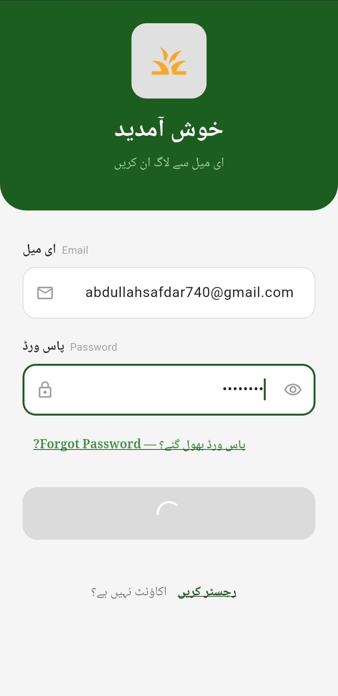
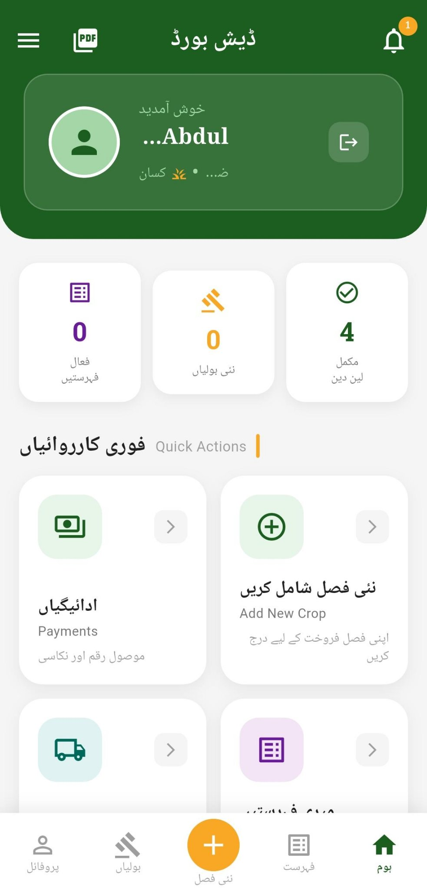
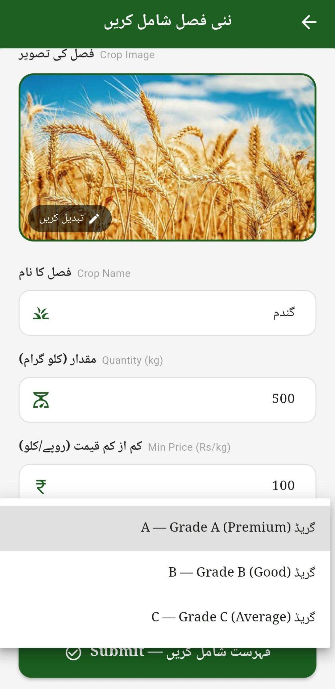
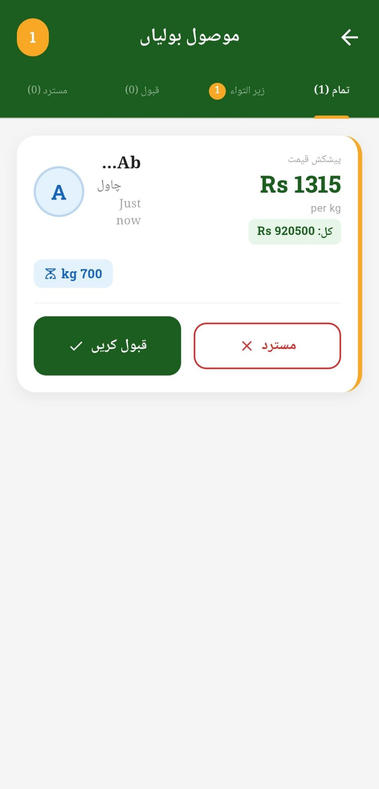

Direct Crop Exchange System
A full-stack mobile marketplace that connects farmers directly with buyers for crop trading — no middlemen. Farmers post crops with quantity, minimum price, grade (A/B/C) and photos; buyers place per-kg bids in real time, and farmers accept or reject them. The app ships with a full Urdu interface, role-based dashboards for Farmer, Buyer and Admin, live bid tracking, and image uploads via Firebase Storage.
- Live bidding system with per-kg pricing and automatic totals
- Real-time listings via Cloud Firestore streams
- Firebase Authentication and role-based access control
- Full CRUD workflows for listings, orders and profiles
Stack: Flutter, Dart, Firebase Authentication, Cloud Firestore, Firebase Storage
View on GitHub


